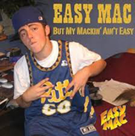

Mac Miller
Malcolm James McCormick was born on January 19, 1992, in Pittsburgh, Pennsylvania. He begun playing the piano at the young age of 6. While in High school at Taylor Allderdice High School, by the time he turn 15 he was serious into gettin into rapping. Before having the stage name of Mac miller his name was EZ Mac & realeased his first mixtape "But My Mackin' Ain't Easy" at 15 in 2007.
